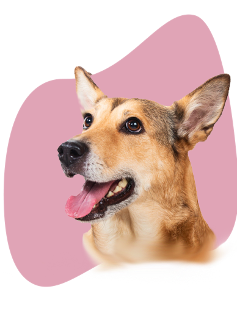

Uniendo a mascotas perdidas con sus dueños
Ayudanos a reunir a las mascotas con sus familias 🐾
Cómo funciona
Completa el formulario que está en nuestro sitio
Almacenamos el formulario en nuestra base de datos
Subimos automáticamente el formulario en nuestro sitio
Buscas a tu mascota aplicando los filtros